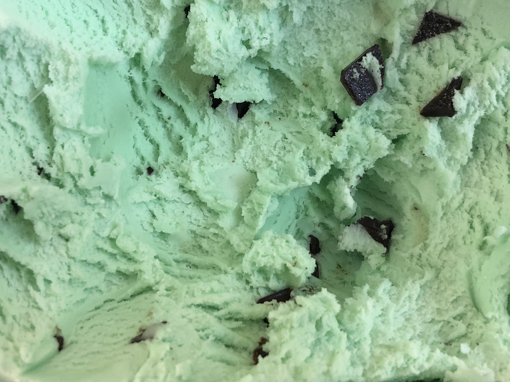

Mint chocolate chip is an ice cream flavor composed of mint ice cream with small chocolate chips. In some cases the liqueur crème de menthe is used to provide the mint flavor, but in most cases peppermint or spearmint flavoring is used. Food coloring is usually added to make it green, but it may be beige or white in "all natural" or "organic" varieties.
According to the International Dairy Foods Association (IDFA), 3% of all ice cream sold in 2000 was mint chocolate chip, making it the 10th-most popular flavor of ice cream. In a July 2017 'National Ice Cream Month' survey by IDFA, mint chocolate chip was ranked as America's 4th most popular ice cream flavor.[1]
Because of its popularity, the flavor is used in other foods (such as cookies and meringues), as well as in a number of products such as cosmetics, air fresheners, and even personal lubricants. Ice cream manufacturer Baskin-Robbins has created a hard candy named "mint chocolate chip" that tastes similar to their ice cream of the same name (which is one of their "permanent flavors").[2]
Some brands name it chocolate (or choco) chip mint, mint 'n chip, or just mint chip.
